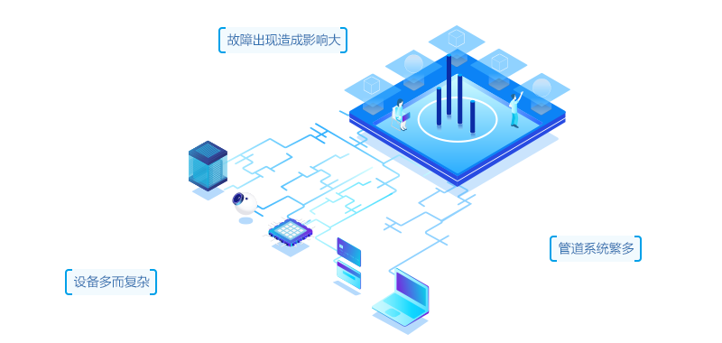
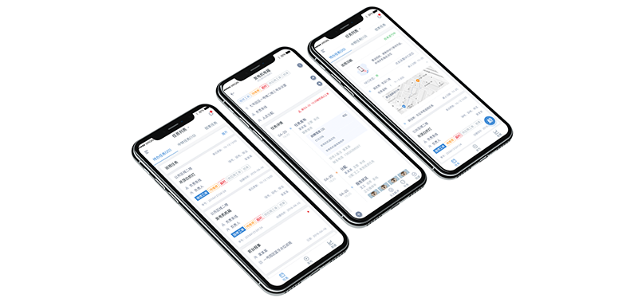

百事亚洲研发中心，坐落于上海浦东市郊。是百事集团环球两大研发中心之一。占地面积达2万余平米，虽然从资产角度来说并不是庞然大物，却装备了各类研发用先进设备，对消防，水，空气等都有严格的实验室需求，安装的复杂设备例如科研用水净化器，科研污水处理装置等等。
普通的建筑物业运维在面对如此复杂的设备管控是可能存在技术不足的地方，利用专业的维保供应商可以解决这类问题。那么及时的设备问题发现，有效率的沟通供应维保单位等需求异常突出，针对本项目案例，介谷科技制定了相应的解决方案。
针对本项目的任务工单管理进行流程的固化，保证项目运行顺利，并且有效的提升工作监督和反馈的速率，能够迅速知晓任务攻工单完成情况，也能迅速进行统计
针对本项目为园区规划智能管理系统，建立统一的管理平台，实现信息资源的数据库共享，提高园区管理效率、丰富决策依据，让园区记录项目资源信息，实现园区内各区域之间信息资源的互联互通。
2017年5月至今
工单完成速度提升78%
智能巡视成功完成率100%